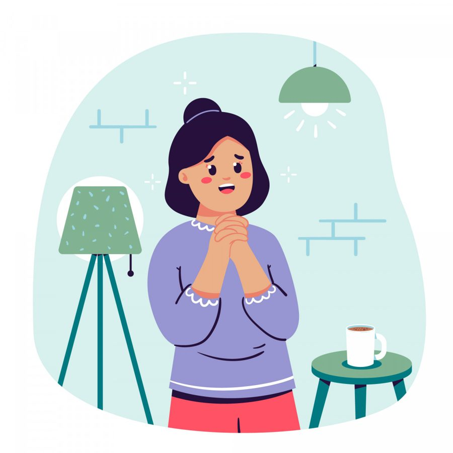

Возможно, вы замечали за собой такое: вам говорят что-то доброе, искреннее, а внутри будто что-то сжимается? Не радость, а странная тяжесть. Словно хвалят кого-то постороннего, а вам сейчас будет неловко или стыдно. Вы автоматически отвечаете: «Да ничего особенного» или «Это просто случайно получилось». И тут же чувствуете облегчение - вы снова в безопасности, вас не разглядели.
На самом деле, это не скромность. Это знакомая многим женщинам внутренняя ловушка: голос, который шепчет, что признание - это риск. Что если поверить в эти хорошие слова, то потом окажешься «виноватой»: виноватой в том, что возомнила о себе, виноватой в том, что превзошла кого-то, виноватой просто в том, что тебя увидели.
Откуда берётся этот голос? Часто из далёких, но очень живых интонаций детства. «Не зазнавайся», «Сиди тихо», «Посмотри, как у других получается». Или моё любимое: «А вот у тёти Светы Ксюша…» (тётя Света — та самая реальная подруга моей мамы, у которой дочь — моя ровесница, спортсменка, умница и т.д. и т.п.) А ещё есть безмолвное, но оттого не менее весомое ожидание: будь удобной, не высовывайся, твои успехи - это просто норма, а не повод для радости. Внутри вырастает строгий страж, который уверен: твоя настоящая ценность в безупречности и незаметности. А любая похвала - это проверка, которую ты с треском провалишь.
Но что, если попробовать иначе? Не изменить себя за один день, а провести маленький эксперимент. Например, когда кто-то говорит вам: «Какая у вас сегодня красивая блузка» или «Вы прекрасно провели презентацию», вместо привычного бегства остановитесь на секунду. Сделайте вдох. И скажите одну из этих фраз, как будто пробуя их на вкус:
«Спасибо. Приятно это слышать»
- так вы не оцениваете факт, а просто отмечаете своё чувство.«Я ценю, что вы заметили»
- здесь вы переводите фокус с себя на контакт с другим человеком.«Спасибо»
- коротко и безопасно.Сначала это будет казаться неестественным и неудобным, как новый костюм. Но в этой неловкости и есть точка роста. Позволить доброму слову быть принятым - это весомый акт доверия к себе.
И магия не в том, чтобы научиться «правильно» отвечать на комплименты. Магия в том, что происходит потом внутри. Когда вы перестаёте автоматически отталкивать хорошее, начинает меняться сама суть вашего мира. Постепенно утихает фоновая тревога «меня вот-вот разоблачат». Появляется странное новое чувство - лёгкость. И впервые вы начинаете ощущать похвалу не как сигнал опасности, а просто как добрый человеческий жест в вашу сторону. Вам говорят приятное и вы чувствуете тепло, а не желание провалиться сквозь землю.
Эта практика не про исправление «неправильной» реакции. Она про понимание: та девочка, которую когда-то учили быть скромной и незаметной, всё ещё живёт внутри и защищает вас как умеет. Ей можно сказать спасибо за службу. А потом бережно начать учить её новому: тому, что вашу видимость можно не бояться. Что ваши успехи могут принадлежать именно вам. Что вы имеете право занимать место под солнцем не за что-то, а просто потому, что вы есть.
Если эти слова находят в вас отклик, если вы устали от внутренней войны, где даже похвала становится оружием против себя - это знак того, что пора выдохнуть. А исследовать эту боль можно не через самокопание, а в безопасном, уважительном пространстве, где вас не будут торопить «думать позитивно». Где просто будут рядом, помогая разобраться в старых маршрутах, чтобы построить новые.
Первая встреча в таком путешествии - не экзамен. Это просто возможность прислушаться к себе вместе с тем, кто понимает эту дорогу изнутри. Чтобы почувствовать: можно по-другому.
Статья подготовлена на основе материалов психологической практики. Если тема откликнулась, вы можете связаться со мной для обсуждения возможности индивидуальной работы.
Статья опубликована на b17.ru.